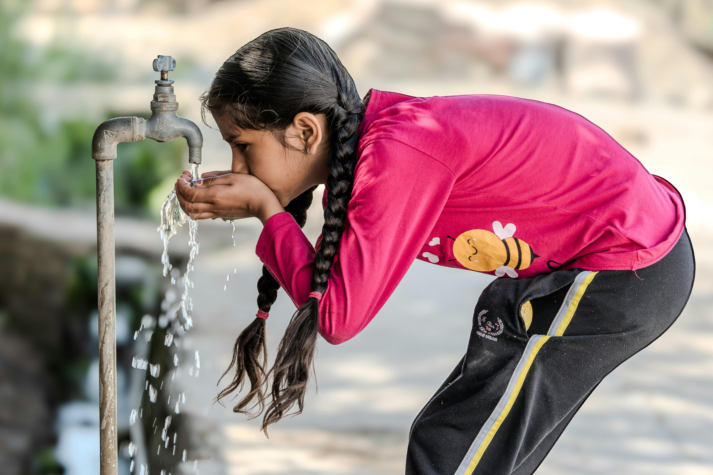

Water
Länders tillgång till vatten vs BNP
Spridningsdiagrammet visar en korrelation mellan ett lands BNP och procentuella mängd rent dricksvatten. Utöver några outliers finns ett starkt positivt samband mellan rikare länder och tillgång till rent vatten. Det finns flera som befinner sig vid en tillgång till dricksvatten på 85 procent eller mindre, där Afrika är överrepresenterat. Fattigare länder saknar den infrastruktur, teknik och finansiering som bidrar till säkert dricksvatten ( Shadabi; A Ward, 2022).
Linjediagram
Spridningsdiagrammet visar en korrelation mellan ett lands BNP och procentuella mängd rent dricksvatten. Utöver några outliers finns ett starkt positivt samband mellan rikare länder och tillgång till rent vatten. Trots att en stor del av länderna befinner sig i den övre procentandelen finns det flera som befinner sig vid en tillgång till dricksvatten på 85 procent eller mindre, där Afrika är överrepresenterat. Fattigare länder saknar den infrastruktur, teknik och finansiering som bidrar till säkert dricksvatten ( Shadabi; A Ward, 2022).
Världskarta
Världskartan visar att det är en stor skillnad i tillgången till rent vatten mellan olika regioner. I Afrika, särskilt i de södra delarna, är tillgången till rent vatten betydligt lägre än i andra delar av världen. I Europa, Nordamerika och Australien är tillgången till rent vatten generellt sett mycket högre. Detta kan bero på faktorer som ekonomisk utveckling, infrastruktur och klimatförhållanden ( Shadabi; A Ward, 2022).